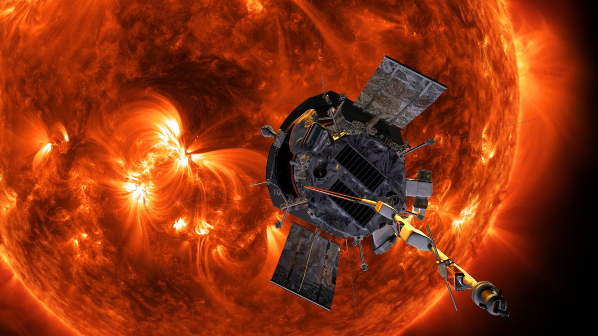
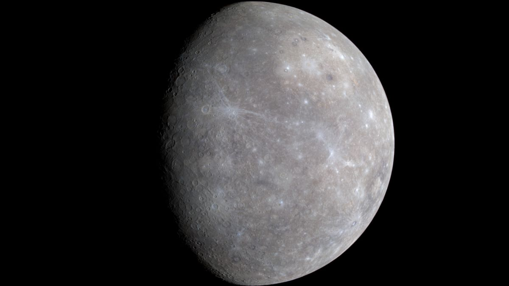
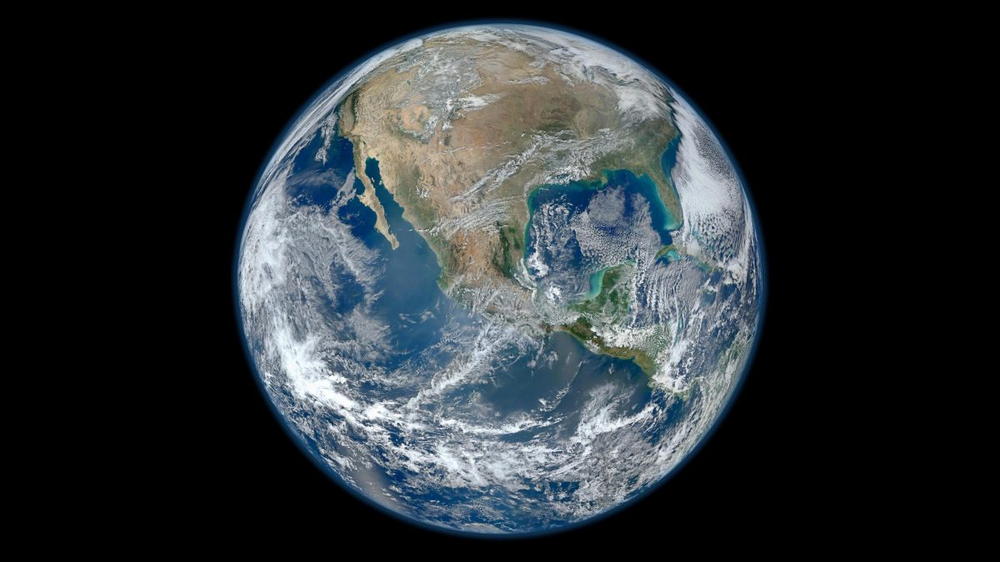
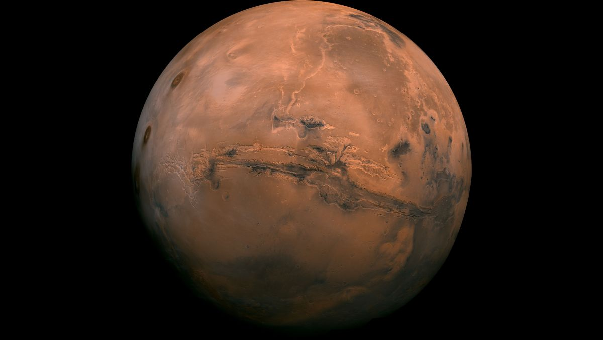
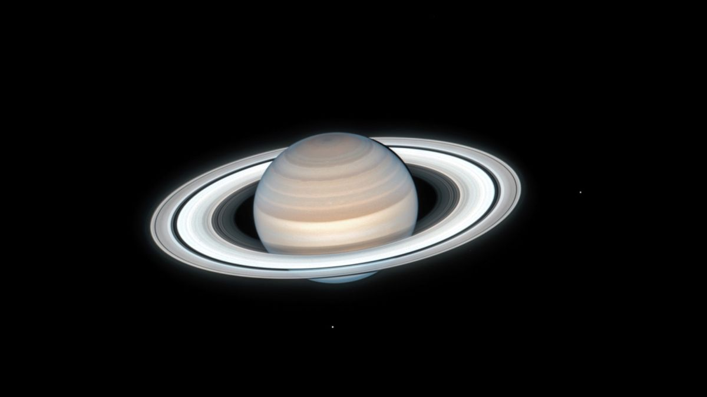
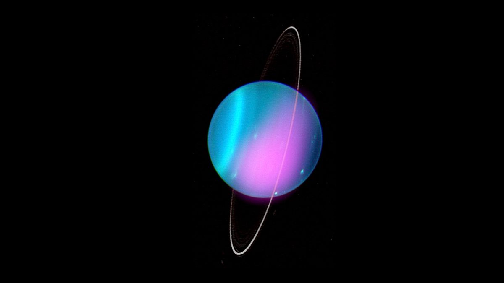
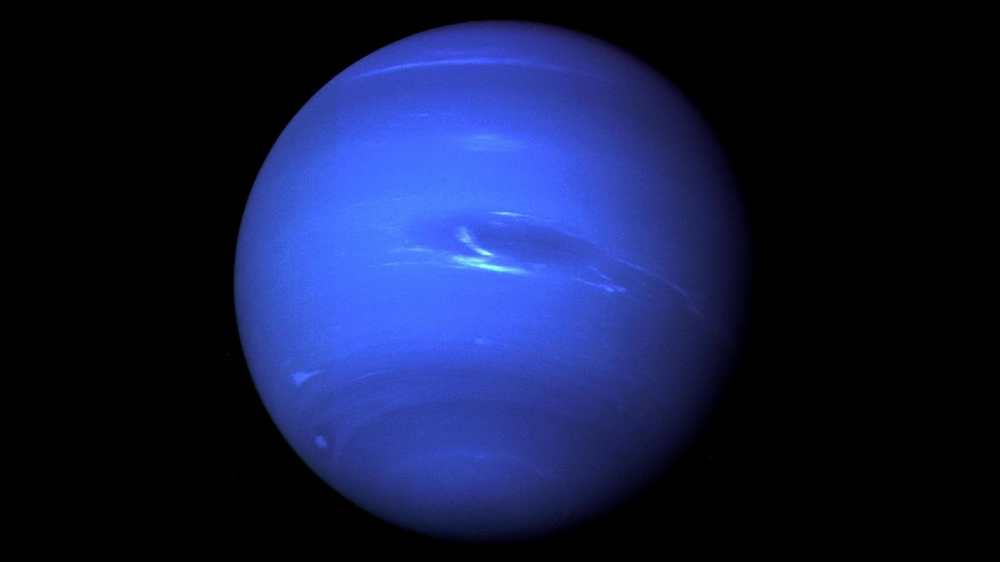

From Molecules to Moons, Planets, and Solar Systems.
Simple chemical molecules orbiting young stars created the Goldilocks
conditions for our next threshold of increasing complexity, because they
provided the building blocks for entirely new astronomical objects: planets,
moons, and asteroids. Planetary bodies were chemically richer than stars,
and much cooler, so they offered ideal Goldilocks environments for
complex chemistry. And on at least one planet (our own), and probably on
many more, that chemistry would eventually generate life.
THE BIRTH OF THE SUN
It was five billion years ago. A giant cloud of matter in our own galaxy, the Milky Way,
condensed under its gravity, exploding in nuclear fusion. This fusion released what we call
sunshine. Very, very, very hot sunshine. And the newly formed star was our Sun. It drew in
most of the surrounding matter, but some escaped. And some of this material clumped together,
settling into a protoplanetary orbit.
WHY IS IT CALLED THE SOLAR SYSTEM?
There are many planetary systems like ours in the universe, with planets
orbiting a host star. Our planetary system is called “the solar system”
because we use the word “solar” to describe things related to our star,
after the Latin word for Sun, "solis."
We have a lot to thank the sun for: heat, light and
energy for a start. We also have to thank it for the
Earth's creation.
PLANETS
Our solar system consists of our star, the Sun, and everything bound to it by gravity -
the planets Mercury, Venus, Earth, Mars, Jupiter, Saturn, Uranus, and Neptune; dwarf planets
such as Pluto; dozens of moons; and millions of asteroids, comets, and meteoroids.

SUN
The sun is by far the largest object in our solar system.

MERCURY
Mercury is the closest planet to the sun and the smallest planet in the solar system.
VENUS
Venus is the second planet from the sun and is the hottest planet in the solar system.

EARTH
Earth, our home planet, is the third planet from the sun.

MARS
Mars is the fourth planet from the sun. It is a cold, desert-like planet covered in iron
oxide dust that gives the planet its signature red hue.
JUPITER
Jupiter is the fifth planet from the sun and the largest planet in the solar system.

SATURN
Saturn is the sixth planet from the sun and is famous for its large and distinct ring system.

URANUS
Uranus is the seventh planet from the sun and is a bit of an oddball.

NEPTUNE
Neptune is the eighth planet from the sun and is on average the coldest planet in the solar system.
HOW DID THE PLANETS FORM?
The formation of planets is a messy by-product of star
creation, which takes place in areas of space rich in
clouds of chemicals.
After the star at the center of our solar system - our
sun - was formed, a mass of debris made up of gas,
dust and particles of ice was left over, while lighter
elements such as hydrogen and helium were blasted
away by violent bursts from the sun. That's why the
outer planets in our solar system are formed mainly
from these elements. But closer to the sun, where
rocky planets like Earth, Venus and Mars were formed,
was an area rich in chemicals like oxygen, aluminum
and iron.
Over time, particles of matter stuck together as they
collided in orbit. Eventually larger objects such as
meteors emerged, which were large enough that their
gravity sucked up surrounding debris. Eventually, this
led to the formation of planets.
The signs of this process remain visible today.
The slightly strange tilt of Uranus and its rings is most
likely the result of a violent collision with another form,
while our moon was probably created by a collision
between Earth and a Mars-sized protoplanet (a kind of
early, pre-planet). That collision sent vast quantities of
matter into a circular orbit around Earth, like the rings
of Saturn, before eventually coming together to form
the moon.
For a long time, humans have known only of our own
solar system - the collection of planets, moons and
debris orbiting the sun. But in the last 30 years, we've
learned that most stars have planets. There could be
many billions of different kinds of planets in the
universe. Studies by astronomists will, in time, reveal
how many could support life. But what conditions
enable life on a planet?